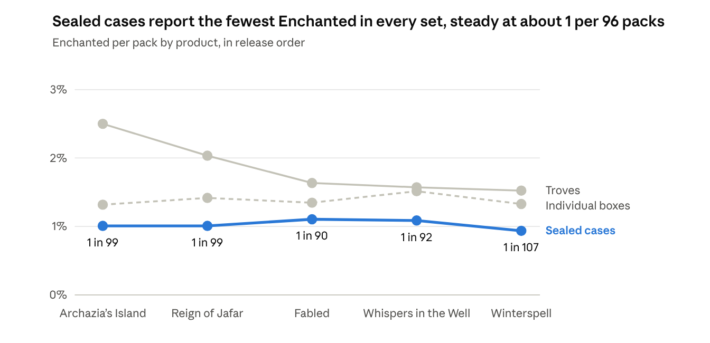
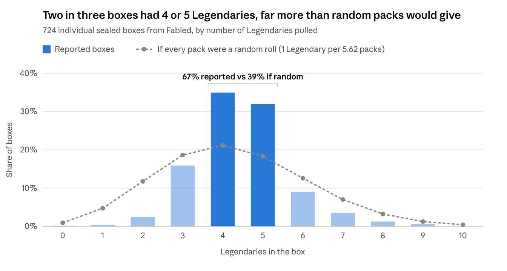

How to Read Our Lorcana Pull Rates
Across five sets, from Archazia’s Island to Winterspell, sealed cases have reported steady rates: about 1 Enchanted per 96 packs, 1 Legendary per 5.7 and 1 Legendary Foil per 41. This page explains how we calculate those numbers, why some products report higher than others, and why box and case odds can’t be worked out from per-pack rates with simple math.
This is a fan-made project, not affiliated with Ravensburger, which does not publish pull rates. Every number comes from community reports of sealed product in all languages except Japanese and Chinese.
The short version
- Chance per pack is our main number: cards pulled divided by packs opened.
- Sealed cases are our baseline, and their rates have held steady for five sets.
- Individual boxes and Troves report higher rates in every set, most likely because exciting pulls get reported more often.
- Big hits are spread out, not scattered at random. Boxes almost never have two Enchanted, and almost every box has an Epic.
- So box and case odds come from what people report, not from a per-pack formula.
- Every report counts, including boxes and Troves with nothing in them.
Chance per pack is our main number
Chance per pack is the number of cards reported divided by the number of packs opened. “1 in X packs” is the same number flipped over.
Example: Reign of Jafar sealed cases had 121 Enchanted in 125 cases (12,000 packs). That’s 12,000 ÷ 121 ≈ 1 Enchanted every 99 packs, or about 1.01% per pack.
We report each set separately, because rates can change between sets.
Sealed-case rates have held steady for five sets
From Archazia’s Island through Winterspell, every rarity in sealed cases has landed in a narrow band: Enchanted 1 in 90–107 packs, Legendary 1 in 5.5–5.8, Legendary Foil 1 in 40–43 and Epic 1 in 16.
This is the backbone of the tracker. Five separate sets, opened and reported by different people, gave the same answer every time, across 694 sealed cases and more than 66,000 packs. Results that repeat like this reflect how the product is made, not luck or a handful of reporters.
Sealed cases only, in packs per card (lower means more common):
| Set | Cases | Enchanted | Legendary | Legendary Foil | Epic | Iconic |
|---|---|---|---|---|---|---|
| Archazia’s Island | 92 | 99 | 5.6 | 41 | ||
| Reign of Jafar | 125 | 99 | 5.5 | 41 | ||
| Fabled | 197 | 90 | 5.6 | 42 | 16 | 1,576 |
| Whispers in the Well | 162 | 92 | 5.8 | 43 | 16 | 864 |
| Winterspell | 118 | 107 | 5.7 | 40 | 16 | 1,259 |
Why this consistency matters:
- It rules out luck. The differences between sets are no bigger than chance alone would produce (see How sure we can be).
- It gives us a yardstick. A steady baseline is what lets us see that Troves and individual boxes report high, and that boxes are smoothed rather than random.
- It makes real changes stand out. A new set that lands outside these bands is a genuine shift, not noise.
- It’s the best estimate available. Ravensburger doesn’t publish pull rates, so five sets of matching sealed-case data are the most reliable numbers the community has.
Epic and Iconic arrived with Fabled. Iconic swings more than the others because each set has only 9 to 18 of them in sealed cases (more on that below).
Wilds Unknown is the first set to break this pattern, as the next section shows.
Wilds Unknown: a real change
Every premium rarity jumped in Wilds Unknown. In sealed cases, Enchanted went from about 1 in 96 packs to 1 in 62, and Legendary from 1 in 5.7 to 1 in 3.8. These are the set’s final numbers. The jumps are far too big to be luck, and the pattern rules out reporting habits as the cause.
Sealed cases, packs per card:
| Rarity | Earlier sets | Wilds Unknown (95 cases) | Likely range for Wilds Unknown | How much more common | Odds this is luck |
|---|---|---|---|---|---|
| Enchanted | 1 in 96 (five sets) | 1 in 62 | 1 in 53–74 | about 55% | about 1 in 370,000 |
| Legendary | 1 in 5.7 (five sets) | 1 in 3.8 | 1 in 3.7–3.9 | about 50% | effectively zero |
| Epic | 1 in 16 (three sets) | 1 in 10.6 | 1 in 9.9–11.3 | about 52% | effectively zero |
| Legendary Foil | 1 in 41 (five sets) | 1 in 33 | 1 in 30–37 | about 26% | about 1 in 3,000 |
| Iconic | 1 in 1,170 (three sets) | 1 in 829 | 1 in 460–1,660 | about 42% | too few to tell (11 Iconics) |
Why we’re confident this is a real change and not reporting:
- Sealed cases moved. The jump shows up in our least selectively reported product, not just in Troves and single boxes.
- Every product moved together. Legendary per pack rose from about 18% to 27.5% in individual boxes, from about 19–21% to 29.8% in Troves, and from about 15–18% to 26.5% in bulk cases.
- The whole box shifted. Earlier boxes bunched at 4 or 5 Legendaries. In Wilds Unknown, 68% of boxes had 6 or 7, and only 11% had 4 or 5. Reporting habits can thin out the extremes, but they can’t move the middle of every box by two cards.
- The packing rules didn’t change, only the rates. Boxes are still smoothed: Legendary spread is about a quarter of what random packs give, and only 3 of 645 boxes had two Enchanted.
Going forward, use Wilds Unknown’s own rates for Wilds Unknown product and don’t blend them with earlier sets. Iconic is the one rarity where 11 cards aren’t enough to say whether it changed. While this tracker was unfortunately not used for Attack of The Vine, the proof is there that the rate change we saw in Wilds appears to be the new standard moving forward. We expect to see the same thing in Hyperia City.
Why sealed cases are our baseline
Sealed cases are the least likely to be reported selectively, because a whole case is opened and reported at once. Single boxes and Troves can be reported one at a time, and a box with an Enchanted is more exciting to share than one without.
The clearest sign is that individual sealed boxes report more Enchanted than the boxes inside cases, and they have in every one of the five sets. They’re the same product, so packing can’t explain the difference. What gets reported can.

The gap follows the excitement. Across the five sets, individual boxes reported roughly 20–40% more Enchanted than sealed cases, but only 2–8% more Legendaries. That is what selective reporting looks like: people decide whether to share based on the big pull.
Troves show the same pattern, only stronger. They reported the most Enchanted per pack in every set: about 2.5 times the sealed-case rate in Archazia’s Island, narrowing to about 1.5 to 1.6 times in the last three sets. Our working assumption is that Trove rates are inflated by reporting. We can’t fully rule out that Troves are packed differently, but the most likely assumption is that Troves are filled with the same packs, and therefore the same odds, as all other product.
Bulk reports, where several boxes or cases are logged as one total, usually run lowest of all, even for Legendary. In four of the five sets, bulk cases came in at about 15–16.5% per pack against 17–18% in sealed cases. Cards may get missed when tallying many products at once, or sealed-case reports may run slightly high. We keep bulk reports separate until we know which.
Iconic shows the reporting gap most clearly
Iconics are the rarest and most valuable pulls, so they’re where selective reporting should show most, and it does. In all three sets with Iconics, sealed cases report them far less often than Troves or individual boxes.
Packs per Iconic (lower means more common):
| Product | Fabled | Whispers in the Well | Winterspell |
|---|---|---|---|
| Troves | 253 | 652 | 525 |
| Individual sealed boxes | 496 | 459 | 753 |
| Sealed cases | 1,576 | 864 | 1,259 |
| All products | 642 | 690 | 916 |
Each cell rests on only 4 to 35 Iconics, so single numbers bounce around, but the order holds. Across the three sets, sealed cases logged 39 Iconics in 45,792 packs, about 1 in 1,170. Bulk case reports land close by, at 15 in 20,544 packs (about 1 in 1,370), while all products together give about 1 in 715.
Our biggest finding: boxes are smoothed out, not random
Packs are not independent random rolls. Almost every box gets at least one Epic, and almost no box gets two Enchanted. Big hits are spread across boxes far more evenly than chance allows.
Think of it as dealing cards rather than rolling dice. Roll a die for every pack and some boxes get lucky streaks while others get nothing. Deal the hits out across the boxes and each box tends to get its share. Spreading doesn’t change how many cards there are, so per-pack rates still hold; it changes how they land in boxes and cases.
If every pack were its own random roll, the chance of at least one hit in n packs, at a per-pack rate p, would be:
In Excel that’s =1-(1-p)^n, or =1-BINOM.DIST(0, n, p, TRUE). Reported results don’t match it:
| What we checked | Per-pack rate used | Random packs predict | Reported | Odds of this by luck |
|---|---|---|---|---|
| Boxes with 2+ Enchanted, five sets (5,245 boxes) | each set’s own rate, 1 in 92–107 | about 133 boxes (2.5%) | 11 boxes (0.2%) | effectively zero |
| Fabled boxes with no Epic (1,511 boxes) | 1 in 16 | about 21% | about 3% (50 boxes) | effectively zero |
| Boxes with 0–2 Legendaries, five sets (2,358 boxes) | each set’s own rate, about 1 in 5.4–5.5 | about 368 boxes (16%) | 79 boxes (3.4%) | effectively zero |
| Fabled Troves with 2+ Epics (659 Troves) | 1 in 13.8, the Troves’ own rate | about 73 Troves (11%) | 34 Troves (5%) | about 1 in 10 million |
The double-Enchanted limit shows up in every set, not just one:
| Set | Boxes | Random packs predict | Reported |
|---|---|---|---|
| Archazia’s Island | 662 | 16 | 0 |
| Reign of Jafar | 994 | 24 | 2 |
| Fabled | 1,621 | 44 | 4 |
| Whispers in the Well | 1,088 | 30 | 3 |
| Winterspell | 880 | 19 | 2 |
| Wilds Unknown | 645 | 37 | 3 |
Boxes counts the boxes inside sealed cases plus individual sealed boxes. Even Wilds Unknown, where Enchanted are far more common, has had 3 double boxes where random packs would give about 37, so the one-per-box limit appears to have carried over.
Every test points the same way, and selective reporting can’t explain them. Reporting bias makes exciting boxes more common, yet double-Enchanted boxes are far rarer than chance. Sealed cases, our least selectively reported product, show the same pattern as individual boxes: 3.0% of case boxes had no Epic, against 3.6% of individual boxes. Even Troves are smoothed out.

Legendaries show it most clearly, because there are so many of them. Box counts bunch tightly around 4 and 5, with less than half the spread random packs would give. The same holds in all five sets, Archazia’s Island through Winterspell: 63–68% of boxes had 4 or 5 Legendaries, against about 40% for random packs, and the spread was 36–44% of what random packs give.
Cases are smoothed too, most strongly in the first two sets. Every set had more sealed cases with an Enchanted than random packs would give. In Archazia’s Island and Reign of Jafar, Enchanted were spread almost one per case. Since Fabled, cases look like each box gets at most one Enchanted, with the four boxes otherwise independent.
| Set | Sealed cases | Cases with an Enchanted | If packs were random | If each box held at most one |
|---|---|---|---|---|
| Archazia’s Island | 92 | 87% | 62% | 67% |
| Reign of Jafar | 125 | 82% | 62% | 67% |
| Fabled | 197 | 76% | 66% | 71% |
| Whispers in the Well | 162 | 73% | 65% | 70% |
| Winterspell | 118 | 67% | 59% | 64% |
The clearest sign is how often a case has two Enchanted. Random packing gives about one double for every two singles. Archazia’s Island and Reign of Jafar had about one for every seven, while the last three sets are back near one for every two. Reporting habits can’t change that ratio, so the way Enchanted are spread across a case appears to have changed around Fabled, the set that added Epic and Iconic.
What this means for you:
- A box is more likely to have an Epic, and a case more likely to have an Enchanted, than the formula says.
- Doubles are rarer than the formula says. About 1 box in 500 has had two Enchanted.
- A full box gives steadier results than 24 loose packs from different boxes: the same average, with fewer extremes either way.
- For boxes and cases, we show the share of reported boxes and cases that actually hit. The formula is only a “what if packs were random” comparison.
- Reported box and case results can still run a little high because of selective reporting, so treat them as close, not exact.
How sure we can be
Five sets and more than 165,000 reported packs pin down common cards tightly and rare cards more loosely, and the set-to-set differences in sealed cases are no bigger than chance alone would produce. For a rate p measured over n packs, the 95% margin of error is roughly:
What we’ve collected so far:
| Set | Packs reported, all products | Sealed cases | Sealed-case packs | Enchanted in sealed cases |
|---|---|---|---|---|
| Archazia’s Island | 18,544 | 92 | 8,832 | 89 |
| Reign of Jafar | 31,528 | 125 | 12,000 | 121 |
| Fabled | 49,432 | 197 | 18,912 | 209 |
| Whispers in the Well | 36,592 | 162 | 15,552 | 169 |
| Winterspell | 31,160 | 118 | 11,328 | 106 |
| All five sets | 167,256 | 694 | 66,624 | 694 |
The margin of error depends on how many cards have been seen, not on how many packs were printed. A handy rule: it’s about 2 ÷ √(cards seen), as a share of the rate. 100 Enchanted gives about ±20%, and 400 gives about ±10%.
- Legendary: 1,574 to 3,362 found in sealed cases per set, so each set’s rate is pinned within about ±3–5%.
- Legendary Foil: 218 to 449 per set, about ±9–13%.
- Enchanted: 89 to 209 per set, about ±13–21%. All five sets together (694 Enchanted) narrow it to about ±7%, or 1 in 89 to 1 in 104 packs.
- Iconic, three sets of sealed cases: 39 Iconics in 45,792 packs is about 1 in 1,170. With so few cards, the likely range runs from about 1 in 860 to 1 in 1,650 packs. One set alone is far less certain: Fabled’s 12 case Iconics fit anywhere from about 1 in 900 to 1 in 3,050.
![Chart titled “Five sets agree within their margins of error; Wilds Unknown stands apart”. Enchanted per pack in sealed cases, with the 95% margin of error for each set. Archazia’s Island 1 in 99 (92 cases, 1 in 82–125), Reign of Jafar 1 in 99 (125 cases, 1 in 84–121), Fabled 1 in 90 (197 cases, 1 in 80–105), Whispers in the Well 1 in 92 (162 cases, 1 in 80–108), Winterspell 1 in 107 (118 cases, 1 in 90–132). All five sit close to the five-set average of 1 in 96. Wilds Unknown is 1 in 62 (95 cases, 1 in 53–74), clearly above the others.](proof-chart-margins.png)
What that means:
- The sets agree. If all five shared exactly the same rates, gaps this size would show up most of the time (consistency test: p = 0.65 for Enchanted, 0.39 for Legendary, 0.90 for Legendary Foil). So 1 in 90 versus 1 in 107 is noise, not a change in per-pack rate.
- A real change stands out. Wilds Unknown’s rate sits outside every earlier set’s range, which is why we treat it as a genuine shift.
- Tighter single-set numbers take more cases. Pinning one set’s Enchanted rate to ±10% takes about 385 Enchanted, roughly 385 sealed cases.
- These ranges cover luck only. They treat every pack as independent. Because cards are spread out evenly, the true random error is probably a little smaller than shown.
More reports shrink random noise, but they can’t fix selective reporting. If mostly exciting pulls get reported, a bigger pile of reports just gives a more precise wrong number. That’s why reporting everything matters more than reporting more.
How you can help
The most useful report is a complete one, especially when nothing exciting came out.
- Report every sealed product you open, including boxes and Troves with no big hits.
- Report the whole box or case, not just the packs that hit.
- If you opened several products, submit all of them, even if only one was good.
- Make sure to tell everyone you know who opens Lorcana product to report their results!